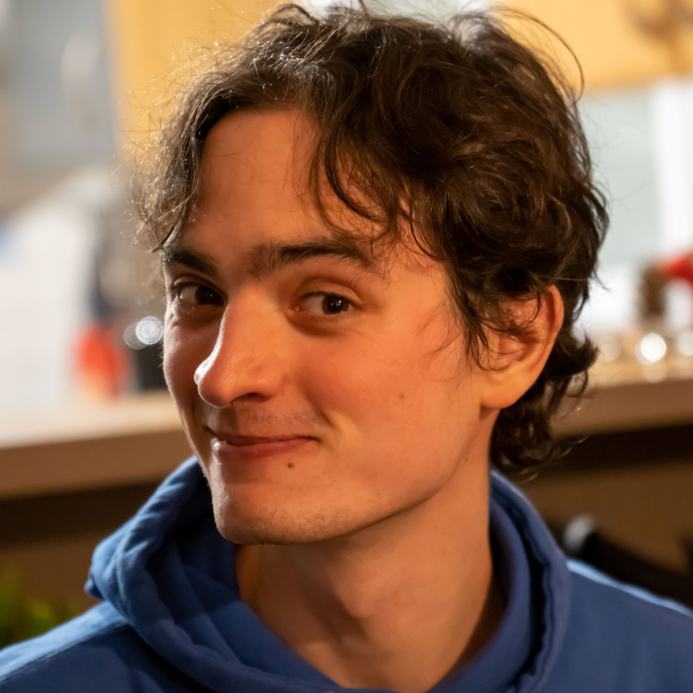
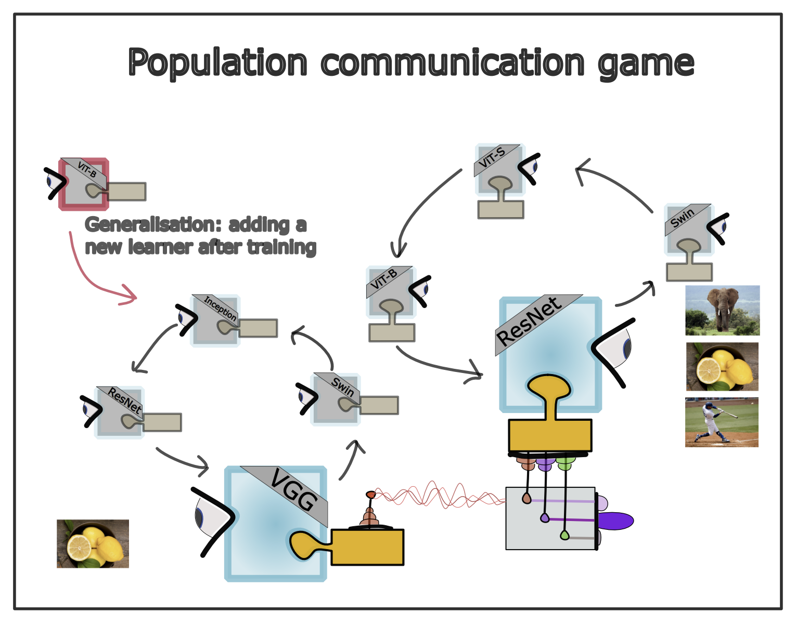

Matéo Mahaut

I'm Matéo, a final year PhD student in the COLT group at Universitat Pompeu Fabra under the supervision of Marco Baroni. I'm interested in universal representations, emergent communication, and interpretability of language and vision models. Before that, I got my engineering diploma at the École Nationale Supérieure de Cognitique in Bordeaux, and interned at the FLOWERS Inria lab, and the Institut de Neurosciences de la Timone in Marseille.
News
- Summer 2025 - I attended the LOGML and Analytical Connexionism summer schools, earning a "Best Presentation" award.
- August 2024 - Our paper "Factual Confidence of LLMs: on Reliability and Robustness of Current Estimators" was accepted at ACL 2024!
- June 2024 - I co-organised the Rest-CL PhD retreat with COLT.
- December 2023 - I once again gave an introductory course on Reinforcement Learning at the Madagascar Machine Learning Sumer School.
- December 2023 - I presented what a PhD was and spoke about technology jobs with student from Lycée Jaques Brel.
- September 18th 2023 - I am doing a 4 months internship in the LLM group @ AWS Barcelona.
- July 14th 2023 - I went to the 2023 Lisbon Machine Learning Summer School.
- July 1st 2023 - We are organising the second edition of the Rest-CL PhD retreat!
- June 31st 2023 - I presented the extended abstract version of our referential communication paper at AAMAS 2023.
- December 15th 2022 - I gave an introductory course on Reinforcement Learning at the Madagascar Machine Learning Sumer School.
- April 11th 2022 - I am co-organising the Rest-CL PhD retreat with COLT and DMG-UvA PhDs.
Teaching
Reinforcement Learning - Madagascar Machine Learning Summer School
December 2023 & December 2022
I gave an introductory course on Reinforcement Learning at the Madagascar Machine Learning Summer School, covering the basics of RL, key algorithms, and applications to LLMs.
Computational Semantics - Universitat Pompeu Fabra
Fall 2024
As a teaching assistant, I helped students understand the fundamentals of machine learning, supervised lab sessions, and provided support for course projects.
Projects
LLM interpretability - mecanisms of factual memorisation
Ongoing work, feel free to contact me with questions and ideas!
We analyze different ways facts are stored and accessed by LLMs. A first work ( published at ACL) compared methods estimating model confidence in a given fact. Current extensions explore the memorisation process. We're for example interested in how representation of a sentence will vary depending on fine-tuning.
Referential communication in pre-trained populations

This project looked at whether very different state of the art foundation models could build a common language for referential communication. Our results show that a common representation can very rapidly emerge, and that those protocols can generalise in a variety of ways (Accepted at TMLR). Follow up works include understanding how models build such similar representations throughout the different layers.
Repetitions in Language Models
In this project, we investigate the mechanisms behind repetition phenomena in large language models.
Our findings show that not all repetitions are generated by the same underlying processes—distinct
mechanisms can sustain repetition depending on the context and model architecture.
Ongoing works include looking at the apparition of this phenomenon in the training process, and the
mapping of different circuits to different functions.
Read the paper: "Repetitions are not all alike: distinct
mechanisms sustain repetition in language models"
Publications
An approach to identify the most semantically informative deep representations of text and images
Santiago Acevedo, Andrea Mascaretti, Riccardo Rende, Matéo Mahaut, Marco Baroni, Alessandro Laio.
ArXivRepetitions are not all alike: distinct mechanisms sustain repetition in language models
Mahaut, M., & Franzon, F. (2025). Repetitions are not all alike: distinct mechanisms sustain repetition in language models. arXiv preprint arXiv:2504.01100.
ArXivFactual Confidence of LLMs: on Reliability and Robustness of Current Estimators
Aina, L., Czarnowska, P., Hardalov, M., Müller, T., Màrquez, L. (2024). Factual Confidence of LLMs: on Reliability and Robustness of Current Estimators. ACL 2024, Bangkok Thaïland.
ArXiv GitHub PosterReferential communication in heterogeneous communities of pre-trained visual deep networks
Mahaut, M., Franzon, F., Dessì, R., & Baroni, M. (2023). Referential communication in heterogeneous communities of pre-trained visual deep networks. arXiv preprint arXiv:2302.08913.
ArXiv GitHub PosterSocial network structure shapes innovation: experience-sharing in RL with SAPIENS
Nisioti, E., Mahaut, M., Oudeyer, P. Y., Momennejad, I., & Moulin-Frier, C. (2022). Social network structure shapes innovation: experience-sharing in RL with SAPIENS. arXiv preprint arXiv:2206.05060.
ArXivTeam performance analysis of a collaborative spatial orientation mission in Mars analogue environment
Prebot, B., Cavel, C., Calice, L., Mahaut, M., Leduque, A., & Salotti, J. M. (2019, October). Team performance analysis of a collaborative spatial orientation mission in Mars analogue environment. In 70th International Astronautical Congress (p. 7).
Researchgate